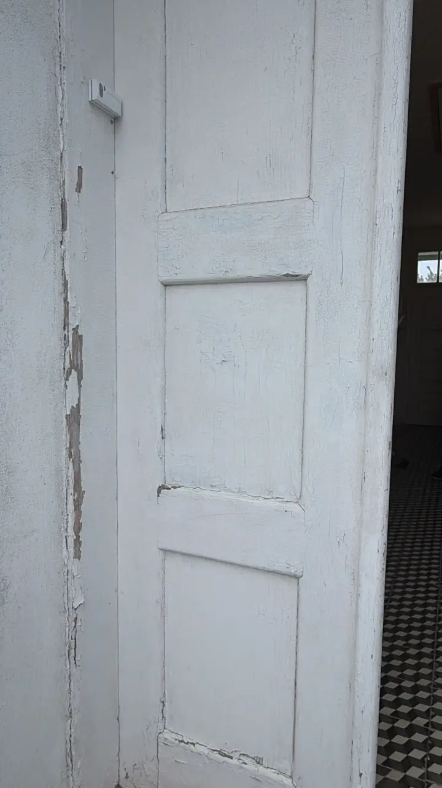
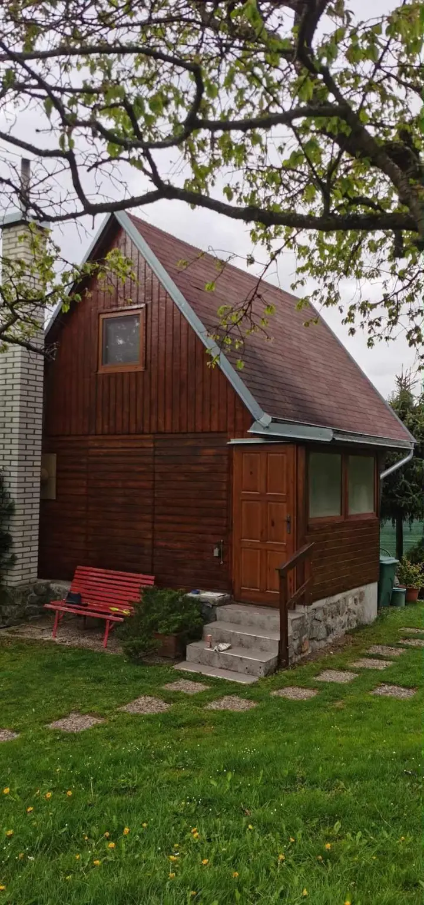

16Okna, dveře, pergola nebo plot zase jako nové a chráněné před počasím. Starý nátěr očistíme a ochranu zvolíme podle materiálu. Přijdou pokaždé stejní lidé a po práci uklidíme.
Pošlete fotky prvků a detailů starého nátěru a do 24 hodin se vám ozveme. Nacenění je zdarma a nezávazné. Termín, který domluvíme, dodržíme.

Ukázky realizací: 7 zakázek a 60 fotografií. Klepnutím na fotku otevřete celou galerii zakázky.
Nový nátěr drží jen na připraveném podkladu. Proto starý povrch nejdřív očistíme a ochranu zvolíme podle materiálu a toho, jak moc je vystavený počasí.
Nesoudržné vrstvy a korozi odstraníme dřív, než natíráme. Nová vrstva tak navazuje na připravený podklad.
Na dřevo i kov volíme základ a vrchní nátěr podle prostředí. Zohledníme počasí i ochranu kovu před korozí.
Kdo si s vámi práci domluví, ten ji i udělá. Okolí zakryjeme, termín dodržíme a po práci uklidíme.
Projdeme materiál, poškození, korozi a přístup k jednotlivým prvkům.
Očistíme a podle stavu odstraníme nesoudržné vrstvy.
Základ a vrchní nátěr navrhneme podle materiálu a prostředí.
Dokončíme členité detaily a domluvený odstín.
Rozhoduje plocha a členitost prvků, stav starého nátěru, rozsah přípravy, zvolený nátěrový systém a přístup k povrchu. Pošlete fotky celku i detailů a přibližné rozměry a připravíme nezávaznou cenu.
Ano. Rozsah obnovy určíme podle materiálu a stavu původních vrstev.
Ne vždy. Nesoudržné vrstvy nebo koroze vyžadují odpovídající přípravu.
Ano. Kovové prvky očistíme od koroze a nesoudržných vrstev a zvolíme základ i vrchní nátěr, který kov ochrání.
Ano. Odstín domluvíme předem a podle něj zvolíme vhodný nátěrový systém.
V celém Brně a okolí do zhruba 20 km, například v Modřicích, Šlapanicích, Kuřimi, Rosicích nebo Slavkově u Brna.
Cenu počítáme podle počtu a velikosti prvků. Příprava povrchu, zakrytí i úklid jsou v ceně, kterou vám předem potvrdíme. Žádné skryté položky.
Pošlete nám stručné zadání. Probereme možnosti a připravíme nabídku podle skutečného rozsahu práce.
Pro první domluvu stačí: co a z jakého materiálu natíráme, počet prvků nebo jejich rozměry, fotografie starého nátěru a detailů.